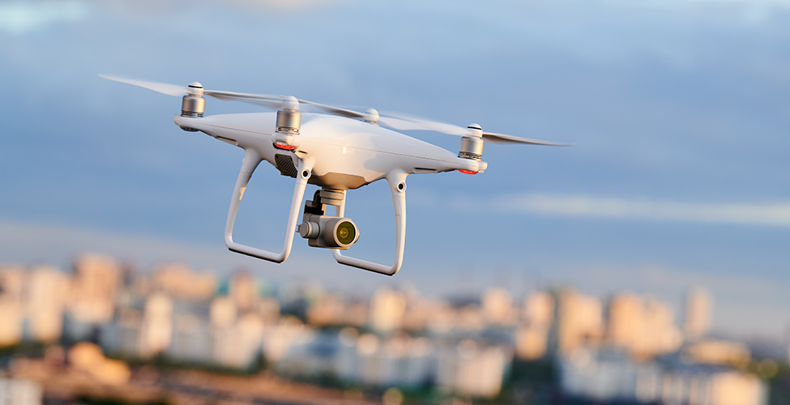
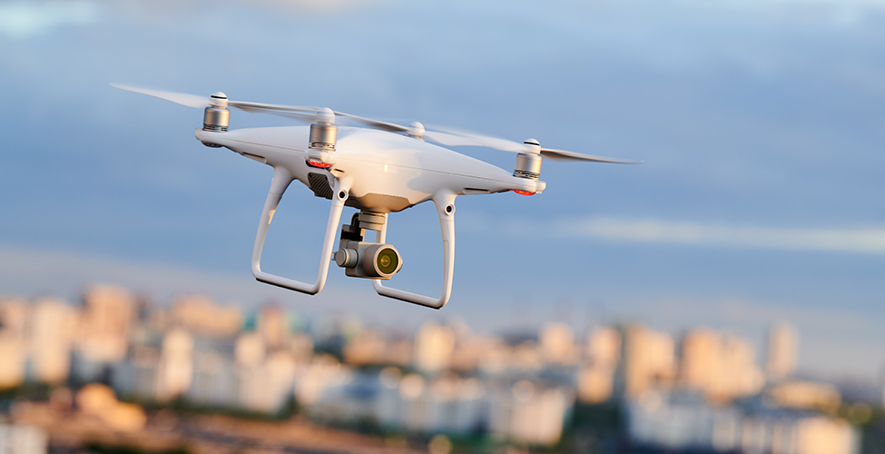

SNCF Project: Shortest Path Finder
This project involved developing an intelligent algorithm to compute the shortest path between two railway stations on a map...
- Parsed a graph of stations and routes from map data
- Implemented Dijkstra’s and A* algorithms for path planning
- Integrated ROS for real-time simulation
- Used OpenCV for future station detection